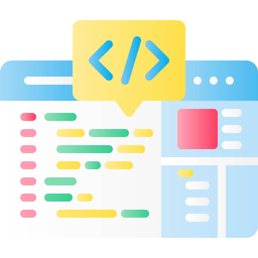

La accesibilidad web para todo tipo de discapacidad
¿Que es la accesibilidad web?
Desde hace años existen numerosas pautas (consejos) que ayudan a los desarrolladores web a crear sitios web accesibles. Las más famosas son las Pautas de Accesibilidad al Contenido Web (Web Content Accessibility Guidelines) desarrolladas por el grupo Web Accessibility Initiative del W3C.
Las “Pautas de Accesibilidad para el Contenido Web 2.0” (WCAG 2.0) [W3C, 2008] han sido desarrolladas por Web Accessibility Initiative, (WAI), organismo dependiente del W3C, y definen cómo crear contenido web accesible Introducción a la Accesibilidad Web:
La accesibilidad web significa que personas con algún tipo de discapacidad van a poder hacer uso de la Web. En concreto, al hablar de accesibilidad web se está haciendo referencia a un diseño web que va a permitir que estas personas puedan percibir, entender, navegar e interactuar con la Web, aportando a su vez contenidos.
La aplicación de la accesibilidad no sólo garantiza y facilita el uso a personas con discapacidad, sino también a otros colectivos como personas mayores e incluso jóvenes con menos habilidades digitales. Por lo tanto, beneficia a todo el mundo y agiliza el avance transversal de la tecnología.
Por ley, la administración pública, las universidades y algunas empresas (como bancos, empresas de electricidad, de agua o servicios de transporte, entre otras) están obligadas a proporcionar su contenido web de forma accesible.
Ejemplos de problemas de accesibilidad
En el siguiente video podrás conocer sobre algunos problemas de accesibilidad web y como resolverlos
Pautas para un diseño de sitio web accesible (Easy-Checks)
Metatitle
Los buenos títulos de las páginas son particularmente importantes para la orientación, para ayudar a las personas a saber dónde están y moverse entre las páginas abiertas en su navegador. Lo primero que dicen los lectores de pantalla cuando el usuario va a una página web diferente es el título de la página.
• Se muestra en la barra de título de la ventana en algunos navegadores
• Se muestra en las pestañas de los navegadores cuando hay varias páginas web abiertas
• Se muestra en los resultados de los motores de búsqueda
• Se utiliza para los marcadores/favoritos del navegador
• Leído por lectores de pantalla
Texto alternativo (Alt text)
Las alternativas de texto ("texto alternativo") transmiten el propósito de una imagen, incluidas imágenes, ilustraciones, gráficos, etc. Las alternativas de texto son utilizadas por personas que no ven la imagen. (Por ejemplo, las personas ciegas que usan lectores de pantalla pueden escuchar la lectura del texto alternativo; y las personas que han desactivado las imágenes para acelerar la descarga o ahorrar ancho de banda pueden ver el texto alternativo).
El texto debe ser funcional y proporcionar una experiencia de usuario equivalente, no necesariamente describir la imagen. (Por ejemplo, la alternativa de texto apropiada para un botón de búsqueda sería "buscar", no "lupa").
Lo que hay que comprobar:
Cada imagen tiene un texto alternativo apropiado.alt
Títulos
Las páginas web suelen tener secciones de información separadas por encabezados visuales; por ejemplo, el texto del encabezado es más grande y en negrita, de esa manera, las personas pueden navegar hasta los encabezados, incluidas las personas que no pueden usar un mouse y solo usan el teclado, y las personas que usan un lector de pantalla.
•Nivel de encabezado 1 <h1>
• Nivel de encabezado 2 <h2>
• Nivel de encabezado 3 <h3>
Lo que hay que comprobar:
Todo el texto que parece un título está marcado como título.
• Todo el texto marcado como título es en realidad un título de sección conceptual.
• La jerarquía de títulos es significativa.
• Lo ideal es que la página comience con un "h1", que suele ser similar al título de la página, y no se salte niveles; sin embargo, estos no son requisitos absolutos.
Relación de contraste
Algunas personas no pueden leer el texto si no hay suficiente contraste entre el texto y el fondo, por ejemplo, texto gris claro sobre un fondo claro, algunas personas con discapacidad visual, incluidas muchas personas mayores que pierden sensibilidad al contraste con el envejecimiento, necesitan un alto contraste.
Los navegadores web deberían permitir a las personas cambiar el color del texto y el fondo, y las páginas web deben funcionar cuando las personas cambian de color (Este requisito de accesibilidad a veces se denomina "contraste de color" suficiente; sin embargo, eso es incorrecto; técnicamente es "contraste de luminancia".
Escalabilidad del texto
Algunas personas necesitan ampliar el contenido web para poder leerlo. Algunos necesitan cambiar otros aspectos de la visualización del texto: fuente, espacio entre líneas y más.
La mayoría de los navegadores permiten a los usuarios cambiar el tamaño del texto a través de:
• configuración del tamaño del texto (generalmente a través de Opciones o Preferencias)
• zoom de solo texto • zoom de página (que también amplía imágenes, botones, etc.)
Cuando las páginas no están diseñadas correctamente, pueden quedar inutilizables cuando se cambia el tamaño del texto, especialmente cuando se cambia mediante el zoom de solo texto o la configuración de texto, cuando se aumenta el tamaño del texto, a veces parte de las oraciones no son visibles y los usuarios tienen que desplazarse horizontalmente para leer una oración
Accesibilidad a través del teclado
Mucha gente no puede utilizar un ratón y depende del teclado para interactuar con la Web. Las personas ciegas y algunas personas videntes con problemas de movilidad dependen del teclado o de tecnologías y estrategias de asistencia que se basan en comandos del teclado, como la entrada de voz. Los sitios web accesibles permiten a las personas acceder a todo el contenido y las funciones (enlaces, formularios, controles multimedia, etc.) a través de un teclado.
El foco del teclado debe ser visible y debe seguir un orden lógico a través de los elementos de la página. El foco visible del teclado podría ser un borde o resaltado, como se muestra a continuación, que se mueve a medida que avanza por la página web.
Qué hacer: En un navegador que admita navegación mediante teclado con la tecla Tab (por ejemplo, Firefox, IE, Chrome y Safari; no Opera).
Qué comprobar:
• Tabulador para todos: compruebe que puede tabular todos los elementos, incluidos enlaces, campos de formulario, botones y controles del reproductor multimedia. (Un problema común es que no puede acceder a los controles del reproductor multimedia).
Contenido en movimiento
El contenido en movimiento, intermitente o parpadeante incluye carruseles ( por ejemplo, carrusel ), anuncios, vídeos, tickets de acciones con actualización automática, fuentes de noticias con desplazamiento y más. Los usuarios deben poder controlar el contenido en movimiento, especialmente algunas personas con trastorno por déficit de atención o trastornos del procesamiento visual.
Los posibles problemas de accesibilidad con contenido en movimiento, intermitente o parpadeante incluyen: 1. Comprender la información en movimiento: algunas personas leen y procesan la información lentamente. El contenido puede desaparecer antes de que la gente tenga tiempo de leerlo.
Algunas personas tienen dificultades para seguir objetos en movimiento. 2. Distracción del contenido en movimiento: el contenido en movimiento puede dificultar la concentración y la lectura en otros lugares; es decir, las personas no pueden centrarse en algún contenido porque el movimiento en otra área de la página web les llama la atención.
Qué comprobar:
• Compruebe si hay información en movimiento, parpadeante o desplazándose que se inicia automáticamente y dura más de cinco segundos. Si es así, verifique que haya una manera para que el usuario pueda pausar, detener u ocultar el movimiento.
• Compruebe si hay información actualizada automáticamente (como el precio de las acciones). Si es así, verifique que haya una manera para que el usuario pueda pausar, detener u ocultar la información actualizada, o para que el usuario controle la frecuencia de la actualización. • Compruebe que ningún contenido parpadee o parpadee más de tres veces en un segundo. Si es así, se necesita una evaluación adicional como se explica en Tres destellos o por debajo del umbral .
Alternativas multimedia
La información contenida en podcasts u otros audios no está disponible para personas sordas o con problemas de audición, a menos que se proporcione en un formato alternativo, como subtítulos y transcripciones de texto. La información visual de los vídeos no está disponible para personas ciegas o con baja visión, a menos que se proporcione en un formato alternativo, como audio o texto. (El texto puede leerse mediante un lector de pantalla o una pantalla Braille, o ampliarse y reformatearse para personas con baja visión). (Recuerde que estas comprobaciones sencillas no son exhaustivas ni definitivas).
Qué comprobar:
Acceso al teclado Siga los pasos anteriores para acceder al teclado y asegurarse de que los controles del reproductor multimedia estén etiquetados y sean accesibles desde el teclado.
Control de inicio automático: Es mejor si el audio (incluido el ruido de fondo y el vídeo con sonido) no se inicia automáticamente cuando se abre una página web. Si se inicia automáticamente, debería:
• Deténgase después de 3 segundos.
• Incluye controles para pausar o detener el audio.
• Incluye controles para bajar el volumen.
Subtítulos: La mayoría de los vídeos en la web que proporcionan subtítulos tienen "subtítulos" que se pueden activar y desactivar. (Siempre se muestran los subtítulos abiertos).
Si hay subtítulos, puedes comprobar que:
• Los subtítulos parecen sincronizados con el contenido hablado.
• Las personas que hablan se identifican cuando hablan.
• Se incluyen sonidos importantes distintos del diálogo (p. ej., pasos que se acercan, puertas que se cierran, cristales que se rompen).
Transcripción: Es una buena práctica proporcionar subtítulos y transcripciones, aunque no siempre es obligatorio; Proporcionar transcripciones tiene muchos beneficios , tanto para las personas con discapacidades como para los propietarios de sitios web.
Estructura de la página web
Las páginas web a menudo se diseñan con varias columnas, secciones, colores y otros aspectos visuales que ayudan a organizar la información para las personas que ven la página en su visualización predeterminada. Sin embargo, algunas personas no ven la página de esta manera. Las personas ciegas escuchan la página con un lector de pantalla o la leen desde una pantalla Braille. Algunas personas con baja visión y otras cambian la forma en que se muestra la página para poder leerla; Por ejemplo, cambiar de varias columnas a una columna, cambiar el tamaño del texto y mucho más. Un tema importante es cómo funciona la página web cuando se "linealiza" en una columna y se cambia la presentación.
Si bien es útil que un usuario experimentado de lectores de pantalla revise las páginas web, cualquiera puede tener una idea inicial de las posibles barreras de accesibilidad para los usuarios de lectores de pantalla.
Qué hacer: Para obtener una vista de estructura básica de la página, siga las instrucciones de Comprobaciones de estructura básica que aparecen a continuación:
• Desactive las imágenes y muestre las alternativas de texto.
• Desactive las hojas de estilo (CSS), que especifican cómo se muestra la página con el diseño, los colores, etc.
• Linealice la página o las tablas (dependiendo de la barra de herramientas).
Lo que hay que comprobar:
• Verifique que la información tenga sentido cuando se lee en el orden en que se muestra; Por ejemplo, los encabezados están justo encima de la información a la que se aplican. (No es necesario que las tablas de datos tengan sentido linealizadas, según la nota anterior).
• Compruebe que el texto alternativo proporciona información adecuada para las imágenes que faltan
Sugerencias para mejorar el posicionamiento de la página web
Describe con precisión el contenido de la página
Elige un título que indique claramente el tema de la página
Evita
• Un titulo que no tenga ninguna relación con el contenido de la página
• El uso de títulos predeterminados o demasiado genéricos como "Sin título" o "Página nueva"

Crea etiquetas title únicas para cada página página
Lo ideal es que cada una de tus páginas tenga una etiqueta title única, que ayude a google a distinguir esa página del resto de las demás del sitio
Evita
• El uso de una sola etiqueta title para todas las páginas de tu sitio o para muchas de ellas
Usa títulos descriptivos breves
Los títulos pueden ser concisos pero informativos, si el título es demasiado largo google mostrará tan solo una parte del mismo en el resultado de la búsqueda
Evita
• No uses títulos muy largos que no sean útiles para los usuarios
• No rellenes las etiquetas title con palabras clave innecesarias